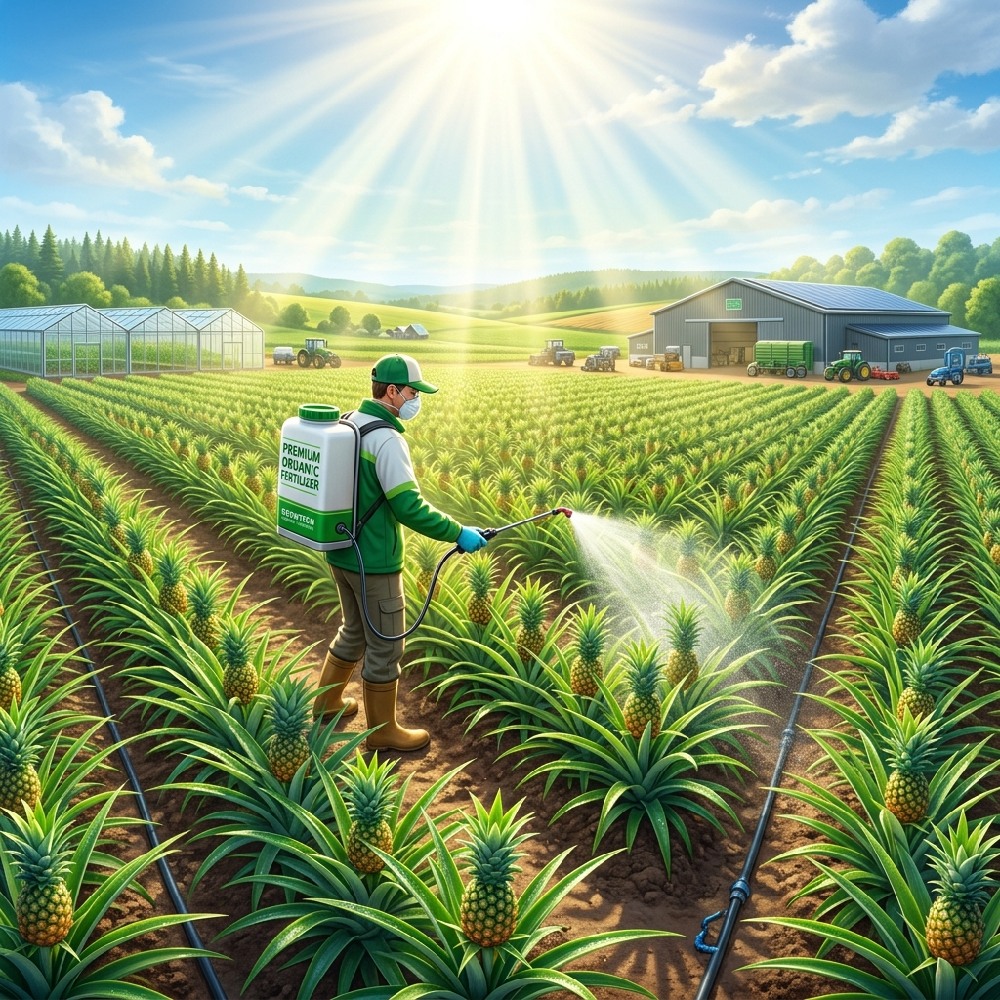
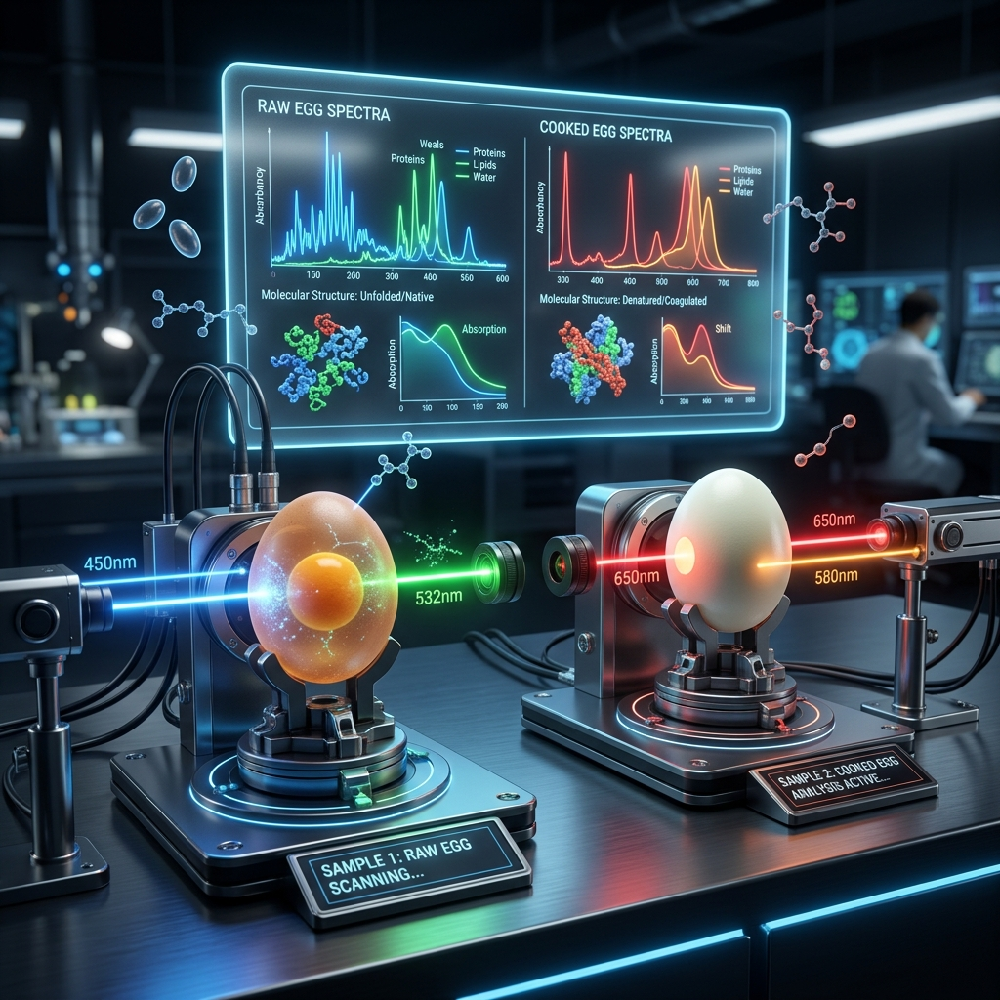

丰泰技研股份有限公司 (Fort RDTech) 專注於先端農業科技開發，並延伸開發相關科技的精密製作工具與Sustainable Materials。
Leading the green circulation, developing safe, eco-friendly, high-precision specialty chemicals that are fluorine/chlorine-free and non-damaging to optical substrates.
Non-toxic, halogen-free formulas friendly to the environment and human health.
Deep roots in crop physiology, polymer science, and natural product chemistry.
Developing eco-friendly processes and environmentally sustainable materials.
Providing superior debonding solutions for precision components and the electronics industry.
Fort RDTech Co., Ltd. was founded on reverence for natural resources and the pursuit of technological innovation. We protect every leaf and fruit with technology, and extend to develop precision materials that satisfy the reworking demands of the modern optoelectronics industry.
From multi-spectral analysis of fruit quality to fertilizers that enhance crop photosynthetic efficiency and safe anti-mold protective coatings.
Developing "safe non-destructive debonding solvents" essential for reworking optical and electronic components, balancing precision and green circulation.
Fort RDTech integrates multi-spectral optics, plant physiology, and interfacial chemistry to provide three core solutions.
Integrating artificial intelligence and multi-spectral detection into handheld devices, breaking away from traditional destructive sampling to help growers, buyers, and inspectors instantly analyze fruit quality.
Developing high-efficiency functional fertilizers and protective agents friendly to natural crop physiology using green chemistry to increase yield and extend shelf life.
Developing safe debonding solvents for high-strength cured adhesives (such as UV glue, thermosetting epoxy) to support optoelectronic product reworking and component recycling.
In-depth yet accessible explanations of agricultural technology principles and the novel molecular chemical mechanisms behind specialty chemicals.
Under limited light conditions, how can we significantly enhance the light conversion efficiency of crops? This article introduces how Fort's photosynthesis promoter uses specific light-converting complexes to enhance Rubisco activity and break natural limitations.
Cured high-strength UV glues and epoxy resins are extremely difficult to remove under three-dimensional cross-linked networks. Learn how Fort's safe debonding solvents utilize "swelling-penetration" synergistic effects to gently remove adhesives without damaging PC or optical lens surfaces.
近紅外光譜 (NIRS) 結合多光譜影像，如何透視水果表皮、檢測內部黑心、水傷與糖度？本文為您揭密丰泰Handheld Fruit Quality Image Analyzer背後的可攜式邊緣計算 AI 技術。
Watch test videos and tutorials to intuitively understand the actual performance of Fort's smart agriculture technology and non-destructive debonding solvents.

Demonstrating how the handheld analyzer completes quick sweetness and quality checks for pineapples and mangoes in the field within seconds.

Time-lapse photography showing L0-Gen-1 to L0-Gen-4 penetrating cross-linked networks to swell and remove high-viscosity adhesives.

Agricultural experts demonstrate dilution and spraying steps, comparing chlorophyll SPAD values of pineapples before and after application.

Scientific experiment showing how different molecular structures absorb wavelengths, precisely determining quality without breaking the shell.
Fort RDTech provides paid R&D sampling and testing services for smart agriculture, functional materials, and specialty debonding agents. Welcome to contact our R&D team.